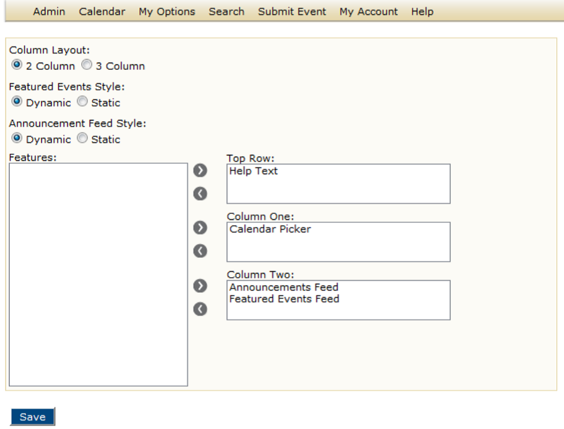

The default page is the first page that a guest or user sees when they open Master Calendar. When the Master Calendar application is first installed, it is installed with a default layout for this page. As the site administrator, you can modify this layout to better suit your organization’s business needs.

2. Modify any or all the default page layout settings as needed.
3. Click Save.
4. Click OK to save your page layout.
Page tags: article:topic